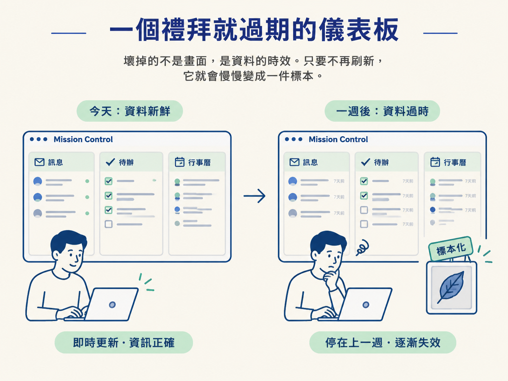
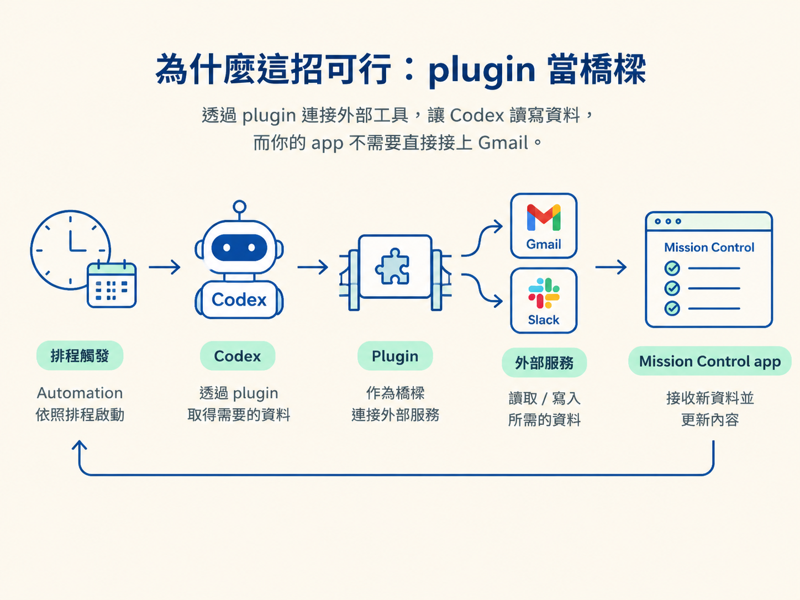

想像你用 Codex 做了一個 Mission Control 儀表板：待辦、訊息、任務、行事曆全彙整在一頁。示範當天很漂亮，訊息是最新的，優先順序也對得上。一個禮拜後你再打開，訊息還停在上一週，待辦早就不是現在的樣子。
壞掉的不是畫面，是資料的時效。這類 app 建立在 Gmail、Slack 這種天天在變的來源上，只要不再刷新，它就會慢慢變成一件標本。

要讓它保持最新，只有兩條路：讓 app 自己連上那些服務隨時抓，或是找個東西固定時間把資料抓回來更新頁面。Codex 把第二條路做成一個功能，叫 automation。這一課先弄清楚它到底解掉什麼問題。不知道它為何存在，後面設定排程時就很容易選錯。
資料來源是 Gmail、Slack 或你每天在用的某個工具時，它隨時都在變。早上看到的信，下午就被新的蓋掉；昨晚在 Slack 定的結論，今天可能翻盤。你的 app 只要抓到某一瞬間的快照，很快就會過期。
那乾脆讓 app 直連 Gmail？技術上做得到，通常不是好主意。一來你的 app 得綁死在 Gmail 的連線上；二來只要這個 app 還有別人要用，就得請每個使用者各自去授權、開權限。光是「請大家各自連外部服務」這一步，就足以讓人打退堂鼓。
所以真正的難題是：內容要夠新，但 app 和使用者都不想背那些外部連線。
Automation 是 Codex 裡的功能，住在排程頁（scheduled tab）。你可以決定它每天跑還是每週跑、幾點跑；時間一到它就自己執行，不需要你坐在電腦前按下去。
而它每次跑的東西，說穿了就是一段 prompt。你寫一段話交代要做什麼，它就照著做。例如：每個上班日的早上八點，做一份今天的 daily brief。也可以是每週回顧，或任何你想得到的自動化。
每個上班日早上 8:00，幫我做一份今天的 daily brief。記住一句話：automation 沒有比「prompt 加上排程」更神祕的東西。它的本質是把你原本會手動下的一段指令，改成時間到了自己跑一次。後面幾課的設定，其實都在回答兩個問題：這段 prompt 要寫什麼，以及它什麼時候跑。
把兩條路並排，差異一眼就出來：
| 連 live 資料源 | Automation（排程刷新） | |
|---|---|---|
| 資料新舊 | 永遠是即時的 | 每跑一次更新一次，例如每天 8 點 |
| 使用者要配合什麼 | 可能要各自授權、連上外部服務 | 什麼都不用做，頁面自己更新 |
| app 要不要直連 Gmail | 要 | 不用，改用 plugin 間接取得 |
| 適合什麼場景 | 必須即時反應的互動 | 每天看一次的儀表板、daily brief |
講白一點：automation 不會讓資料變成即時，它只讓資料「夠新」。你選一個節奏，每天、每週或某個自訂時段都好，它就在那個節奏上把資料刷新一遍。代價是資料可能落後一個排程週期；換來的是不必直連外部服務，也不必麻煩使用者。這筆交易划不划算，取決於你的 app 對「即時」的需求有多高。像報紙每天清早送來一份，看的是今天的全貌，不是這一秒的現場。
你可能會納悶：既然不直連 Gmail，Codex 又怎麼拿到 Gmail 的資料？答案是在中間放一層 plugin。
Plugin 讓 Codex 有能力去讀寫那些外部工具。於是流程變成這樣：automation 照排程觸發，Codex 透過 plugin 去 Gmail 或 Slack 抓它需要的東西，再把資料拿回來更新你的 app。你的 app 從頭到尾不需要自己接上 Gmail，那一層由 plugin 擋在中間。

課程裡的 Mission Control 就是現成的例子。示範時它用的是虛構資料，所以每次抓到的內容都一樣；接上真實 connector 之後，它就會抓到更新後的資料，再把新的內容寫回 Mission Control。差別只在資料是真的還是假的，機制完全一樣。
照著做一個最小的重現，就能確認你真的理解它：在排程頁開出一個 automation（或從對話裡開），prompt 就寫上面那段 daily brief，排程設成每個上班日 8:00。做完你手上會有兩樣東西：一段要跑的 prompt，和一個跑的節奏。這就是 automation 的全部零件，剩下的設定都是在調這兩樣。
Automation 是 Codex 裡「照排程重複跑同一段 prompt」的功能，住在排程頁。它解掉的是內容過期的問題：當 app 建立在天天變動的資料上，而你又不想讓 app 或使用者去背 Gmail、Slack 這類外部連線的負擔時，就用 plugin 加上 automation，定期把資料抓回來、更新頁面。它用「排程刷新」取代「永久即時」，拿即時性換簡單與隱私。
把這個觀念掛在哪裡？它是「app 資料時效」與「連線負擔」之間的取捨點：往左是直連 live 資料源，往右是排程刷新。想清楚這一點，你才決定得了要不要用 automation、以及該排多密。下一步就是動手：建立第一個 automation，把 prompt 和排程設定好，並知道事後怎麼查看與修改它。